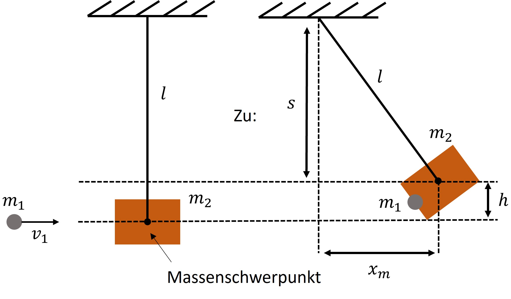

Das Stoßpendel¶
Aufgabenstellung¶
Ein Stoßpendel besteht aus einer dünnen Stange der Länge \(l\), die am unteren Ende einen Holzklotz mit der Masse \(m_2\) trägt. Wird eine Kugel der Masse \(m_1\) in den Holzklotz geschossen, so schlägt das vorher ruhende Pendel um die Strecke \(x_m\) aus.
Wie groß war die Geschwindigkeit des Geschosses (der Kugel)?
Die Länge der Pendelstange beträgt 0,75 m, aus diesem Grund kann \(x_m\) maximal 0,75 m betragen. Dies würde einem rechtwinkligen Pendelausschlag entsprechen. Das Pendel erreicht damit die maximal mögliche Höhe. Wie groß muss die Geschwindigkeit des Geschosses \(v_1\) sein, um dies zu erreichen?
Gegeben¶
Länge der Stange \(l = 0,75~\text{m}\)
Masse der Kugel \(m_1 = 0,50~\text{g}\)
Masse des Holzklotz \(m_2 = 262~\text{g}\)
Strecke \(x_m = 9~\text{cm} = 0,09~\text{m}\)
Gesucht¶
Geschwindigkeit der Kugel \(v_1\) in Metern pro Sekunden \([\frac{\text{m}}{\text{s}}]\)
Skizze¶

Physikalischer Lösungsweg¶
Energieerhaltungssatz¶
Mittels des Energieerhaltungssatzes ist es möglich auf zwei Arten diese Aufgabe zu Lösen:
Einführen der kinetischen Energie \(E_{kin}\) und potentiellen Energie \(E_{pot}\)
über den Stoß:
Mithilfe der kinetischen Energie \(E_{kin}=\frac{m}{2}\cdot v^2=\frac{m_1}{2}\cdot v^2\) und der resultierenden Verformungsarbeit \(W_v\)
Da die Verformungsarbeit jedoch nicht ohne weiteres bestimmbar ist, wird ein anderer Lösungsansatz gewählt - das Pendel:
über das Pendel:
Die kinetische Energie \(E_{kin}\) des ersten Zustands (Holzklotz ruht, Kugel fliegt noch) entspricht der \(E_{pot}\) des zweiten Zustandes
Die Formel lautet somit:
\(E_{kin}=E_{pot}\)
\(\frac{m_{ges}}{2} \cdot v'² = m_{ges} \cdot g \cdot h\)
mit
\(m_{ges} = m_1 + m_2\)
$v’$ ist die gemeinsame Geschwindigkeit des Holzklotzes und der Kugel nach dem Zusammentreffen\
\(g = 9,81\)
\(s=\sqrt{l² - x²_m}\)
\(h=l-s\)
\(h = l - \sqrt{l² - x²_m}\)
Für die Berechnung von \(v'\) wird die eben genannte Formel entsprechend umgestellt:
\(v'² = 2 \cdot g \cdot h\)
Impulserhaltungssatz:¶
Nun wird der Impulserhaltungssatz hinzugezogen:
\(v_1 \cdot m_1 + v_2 \cdot m_2 = m_{ges} \cdot v'\)
Umstellen nach \(v_1\) und Einsetzen von \(v'\), wobei zu beachten ist, dass \(v_2=0\) ist, da der Holzklotz am Anfang in Ruhe ist:
\(v_1 = \frac{m_1 + m_2}{m_1} \cdot \sqrt{2g (l - \sqrt{l^2 - x^2_m})}\)
Aufgabe 1¶
Berechnung \(v_1\):
\(v_{1} = \frac{0,5 + 262}{0,5} \cdot \sqrt{2 \cdot 9,81 \cdot (0,75 - \sqrt{0,7^2 - 0,09^2})} = 171~\frac{\text{m}}{\text{s}} ≈ 615~\frac{\text{km}}{\text{h}}\)
Aufgabe 2¶
Berechnung \(v_{max}\), bei \(x_{m_{max}} = 0,75~\text{m}\):
\(v_{max} = \frac{0,5 + 262}{0,5} \cdot \sqrt{2 \cdot 9,81 \cdot (0,75 - \sqrt{0,75^2 - 0,75^2})} = 2013,91~\frac{\text{m}}{\text{s}} ≈ 7250~\frac{\text{km}}{\text{h}}\)
Implementierung in Python¶
Zuerst müssen einige Biobliotheken importiert werden, die für die Berechnungen, Visualisierung, etc. notwendig sind.
%matplotlib widget
import ipywidgets as widgets
import matplotlib.pyplot as plt
import numpy as np
import pandas as pd
import math
Nun können wir für die oben gezeigten Formeln durch PyVo-Funktionen definieren, mit denen wir im Anschluss die Ergebnisse berechnen können.
# Funktion zur Berechnung von v1
def berechne_v1(m1, m2, l, xm):
return ((m1 + m2)/m1) * (2*9.81*(l - (l**2 - xm**2)**0.5))**0.5
Nachdem die Formel definiert wurde, können wir nun die gegebenen Werte als Variablen definieren und diese der Funktion übergeben. Im Folgenden wird die Aufgabe 1 dadurch gelöst.
# Variablen definieren
m1 = 0.50 # Masse der Kugel [g]
m2 = 262 # Masse des Holzkotzes [g]
l = 0.75 # Länge der Pendelstange [m]
xm = 0.090 # Länge des Pendelausschlags [m]
# Funktionsaufruf zur Berechnung von v1
v1 = berechne_v1(m1, m2, l, xm)
# Ausgabe des Ergebnisses gerundet auf 1 Stelle nach dem Komma
print(f"v1 = {round(v1, 2)} m/s")
v1 = 171.2 m/s
Es lässt sich mittels der definierten Funktion ebenso Aufgabe 2 lösen. Hierfür liegt der Definitionsbereich von \(x_m\) bei \(D_{x_m} = [0, 0.75]\). Da das Pendel an der Decke befestigt ist, kann es nicht weiter als bis dorthin ausschlagen, \(x_{max}\) ist demnach \(x_{max} = 0,75~\text{m}\).
# Variablenwerte setzen
xm_max = 0.75
# Funktionsaufruf zur Berechnung von v1
v_max = berechne_v1(m1, m2, l, xm_max)
# Ausgabe des Ergebnisses
print(f"Damit das Pendel gegen die Decke schlägt, muss die Geschwindigkeit des Geschosses v1 = {round(v_max, 2)} m/s ({round(v_max*3.6, 2)} km/h) betragen.")
print(f"Das ist circa so schnell wie das rakentenbetriebene Experimentalflugzeug der USA X-15.")
Damit das Pendel gegen die Decke schlägt, muss die Geschwindigkeit des Geschosses v1 = 2013.91 m/s (7250.07 km/h) betragen.
Das ist circa so schnell wie das rakentenbetriebene Experimentalflugzeug der USA X-15.
Graphische Darstellung unter Variation der Anfangsbedingung¶
Nun können wir für verschiedene Strecken \(x_m\) die Geschwindigkeiten \(v\) berechnen.
# Erstellen des xm-Vektors mithilfe von np.arange(Startwert, Endwert, Schrittgröße)
strecken = np.arange(0, 0.80, 0.05)
# Ausgabe des Vektors
print(strecken)
[0. 0.05 0.1 0.15 0.2 0.25 0.3 0.35 0.4 0.45 0.5 0.55 0.6 0.65
0.7 0.75]
Nun definieren wir eine Tabelle, in welcher die Strecken und die Geschwindigkeiten erfasst werden.
werte = []
for x in strecken:
v = berechne_v1(m1, m2, l, x)
werte.append([x, v])
tabelle = pd.DataFrame(werte, columns=['Strecke in [m]', 'Geschwindigkeit in [m/s]'])
tabelle.head()
| Strecke in [m] | Geschwindigkeit in [m/s] | |
|---|---|---|
| 0 | 0.00 | 0.000000 |
| 1 | 0.05 | 94.989337 |
| 2 | 0.10 | 190.298240 |
| 3 | 0.15 | 286.259048 |
| 4 | 0.20 | 383.231128 |
Diese Werte können nun in einem Plot visualisiert werden:
# Definieren der Größe und des Aussehens des Plots
plt.figure(num=None, figsize=(6,4), dpi=150, facecolor='w', edgecolor='k')
# Auftragen der Strecken gegen die Geschwindigkeiten
plt.plot(tabelle['Strecke in [m]'], tabelle['Geschwindigkeit in [m/s]'], 'x')
# Achsenbeschriftungen hinzufügen
plt.xlabel(r"Strecke $\mathit{x_m}$ [m]")
plt.ylabel(r"Geschwindigkeit $\mathit{v}$ [$\frac{m}{s}$]")
plt.show()
Es wird hierbei deutlich, dass je schneller das Geschoss, desto weiter schlägt das Pendel aus. Dies soll im Folgenden visualisiert werden:
def plot_pendel(v1):
m1 = 0.5
mg = 262.5
g = 9.81
l = 0.75
h = ((v1**2 * m1**2)/(mg**2 * 2 * g))
xm = ((2*l*h) - h**2)**0.5
alpha = math.degrees(math.asin((xm/l)))
endbetay = (l * math.sin(math.radians(alpha+270)))+1
endbetax = (l * math.cos(math.radians(alpha+270)))
return [endbetax, endbetay]
fig = plt.figure(num=None, figsize=(5, 5), dpi=150, facecolor='w', edgecolor='k')
ax = plt.subplot(111)
ax.set_ylim([-0.2, 1])
ax.set_xlim([-0.2, 1])
ax.set_ylabel("Höhe der Aufhängung [m]")
ax.set_xlabel("Wegstrecke x [m]")
ax.text(-0.1,0.20,"in Ruhe", fontsize=9)
ax.plot([0.0,0.0], [1,0.25])
line, = ax.plot([0.0,plot_pendel(200)[0]], [1.0,plot_pendel(200)[1]], color='#000000')
text = ax.text(plot_pendel(200)[0],plot_pendel(200)[1],"in Bewegung", fontsize=9)
@widgets.interact(v1=(0, 2000, 10))
def update(v1 = 300):
"""Remove old lines from plot and plot new one"""
line.set_ydata([1.0,plot_pendel(v1)[1]])
line.set_xdata([0.0,plot_pendel(v1)[0]])
text.set_x(plot_pendel(v1)[0]+0.01)
text.set_y(plot_pendel(v1)[1]-0.04)
Die Kartoffelkanone¶
Werden Kartoffeln mit einer Kartoffelkanone auf das Pendel geschoßen, ist davon auszugehen, dass nicht jede Kartoffel dieselbe Masse hat. Um jedoch unabhängig vom Gewicht einer Kartoffel einen gleich großen Ausschlag zu erhalten, wird die Geschwindigkeit - mit der die Kartoffel das Kanonenrohr verlässt - angepasst. Die Berechnung und berechneten Werte werden nachfolgend dargestellt. Für diese Aufgabe wird nur das Gewicht der Kartoffel (Geschosses) verändert, die restlichen Variablen bleiben wie in der vorangegangenen Aufgabenstellung.
# Erstellen des Kartoffel-Vektors
kartoffelmassen = np.arange(50, 450, 50)
# Ausgabe des Vektors
print(kartoffelmassen)
[ 50 100 150 200 250 300 350 400]
Nun definieren wir eine Tabelle, in welcher das Gewicht der Kartoffeln und die Geschwindigkeiten für einen Pendelausschlag von 0,09 m erfasst werden.
kartoffelwerte = []
for m in kartoffelmassen:
m2 = 262 # Masse des Holzkotzes [g]
l = 0.75 # Länge der Pendelstange [m]
xm = 0.090 # Länge des Pendelausschlags [m]
v = berechne_v1(m, m2, l, xm)
kartoffelwerte.append([m, v])
kartoffel_tabelle = pd.DataFrame(kartoffelwerte, columns=['Gewicht Kartoffel [g]', 'Geschwindigkeit [m/s]'])
kartoffel_tabelle.head()
| Gewicht Kartoffel [g] | Geschwindigkeit [m/s] | |
|---|---|---|
| 0 | 50 | 2.034778 |
| 1 | 100 | 1.180432 |
| 2 | 150 | 0.895650 |
| 3 | 200 | 0.753259 |
| 4 | 250 | 0.667824 |
# Definieren der Größe und des Aussehens des Plots
plt.figure(num=None, figsize=(6,4), dpi=150, facecolor='w', edgecolor='k')
# Auftragen der Kartoffelmasse gegen die Geschwindigkeiten
plt.plot(kartoffel_tabelle['Gewicht Kartoffel [g]'], kartoffel_tabelle['Geschwindigkeit [m/s]'], 'x', color='#2b8cbe')
plt.plot(np.arange(50, 400, 1), berechne_v1(np.arange(50, 400, 1), m2, l, xm), '-', color='#2b8cbe')
# Achsenbeschriftungen hinzufügen
plt.xlabel(r"Gewicht Kartoffel $\mathit{m}$ [g])")
plt.ylabel(r"Geschwindigkeit $\mathit{v}$ ($\frac{m}{s}$)")
plt.show()